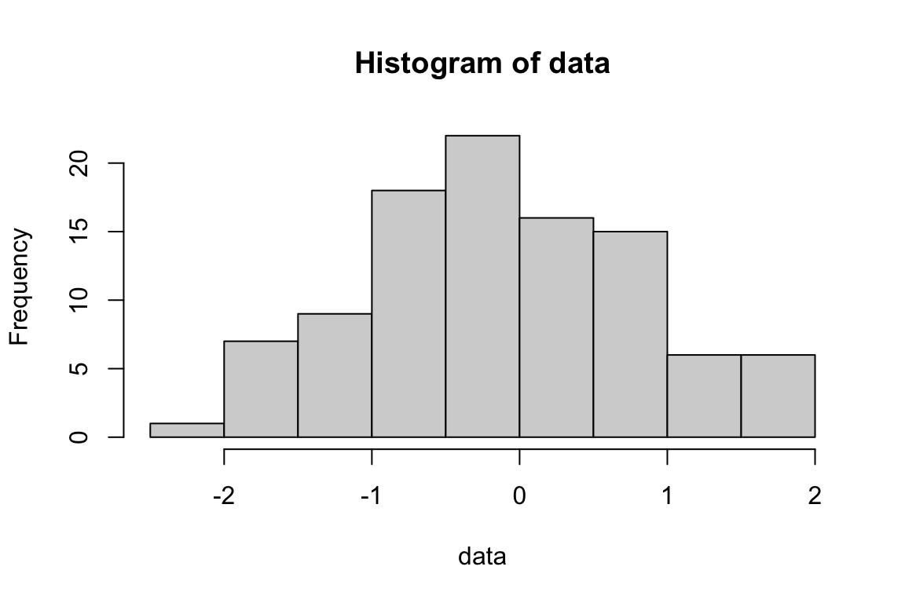

data <- rnorm(100)
mean(data)[1] -0.1264724hist(data)
Matthew Aldridge
December 14, 2021
These slides were written in R Markdown, using the ioslides package. (More later.)
Visit https://mpaldridge.github.io/rmarkdown/ for:
R Markdown is a system for writing mathematical/statistical documents.
Bookdown is a package for R Markdown that provides extra features useful for long documents.
Markdown is a “mark-up” language (like LaTeX or HTML), where special characters and commands tell the computer what formatting you want.
Markdown:
# About MATH1710
## Syllabus
This module is **MATH1710 Probability
and Statistics 1** and will last for
*11 weeks*. We will cover three sections:
1. Exploratory data analysis
2. Probability
- Probability with events
- Probabiltiy with random variables
3. Bayesian statistics
LaTeX:
\chapter{About MATH1710}
\section{Syllabus}
This module is \textbf{MATH1710 Probability
and Statistics 1} and will last for
\emph{11 weeks}. We will cover three sections:
\begin{enumerate}
\item Exploratory data analysis
\item Probability
\begin{itemize}
\item Probability with events
\item Probabiltiy with random variables
\end{itemize}
\item Bayesian statistics
\end{enumerate}Markdown is a “mark-up” language (like LaTeX or HTML), where special characters and commands tell the computer what formatting you want.
R Markdown is a system to write and compile (“knit”) Markdown documents using R…
R is a programming language that is very good at doing statistics.
Using the program RStudio is a convenient way to work with the language R (and with R Markdown documents).
Demos later…
R Markdown is a system to write and compile (“knit”) Markdown documents using R.
R Markdown adds to plain-Markdown:
amsmath extras: mathbb, mathcal, align, align*, cases, pmatrix, etcBookdown is an extra package for R Markdown that is particularly useful for long documents.
Compare earlier demos:
| “Plain” R Markdown | R Markdown with Bookdown |
|---|---|
| Good for short documents | Good for long documents |
| Slightly simpler to write | Slightly trickier to write |
| PDF or accessible HTML | PDF or accessible HTML |
| LaTeX equations | LaTeX equations |
| Single HTML page | Multi-page website |
| No theorem environments | Theorem environments |
I strongly recommend using R Markdown via RStudio.
To install on your own computer:
For a first try, I recommend instead the RStudio Cloud: https://rstudio.cloud
[demo via RStudio Cloud]
| Appearance | (R) Markdown code |
|---|---|
| Bold text | **Bold text** |
| Italic text | *Italic text* |
Fixed width |
`Fixed width` |
| Link | [Link](https://eps.leeds.ac.uk/maths) |
# Chapter
## Section
### SubsectionWriting writing writing writing.
- Leave a spare line
- Dash then space for bulleted lists
1. Indent for sub-lists
1. Use number, dot, space for enumerated lists
1. Markdown will ensure consecutive numbering
- The end.Writing writing writing writing.
Or, use the visual editor.
Bookdown is trickier in RStudio Cloud, so I will revert to RStudio as installed on my computer.
In R Studio:
FileNew ProjectNew DirectoryBook project using bookdownCreate ProjectLaTeX:
\begin{theorem}[Fermat's last theorem] \label{FLT}
No three positive integers $a$, $b$, and $c$ satisfy the equation
$a^n + b^n = c^n$ for any integer value of $n$ greater than $2$.
\end{theorem}
As we saw in Theorem \ref{FLT}\dotsR Markdown, with the Bookdown package:
::: {.theorem #FLT name="Fermat's last theorem"}
No three positive integers $a$, $b$, and $c$ satisfy the equation
$a^n + b^n = c^n$ for any integer value of $n$ greater than $2$.
:::
As we saw in Theorem \@ref(thm:FLT)...Previously,
```{theorem}
Your theorem here.
```had been recommended, but the newer
::: {.theorem}
Your theorem here.
:::method is better.
Theorem-like environments in Bookdown are much less flexible than their LaTeX equivalents.
theorem, lemma, corollary, proposition, conjecture, definition, example, exercise, hypothesis
Here is some R code:
data <- rnorm(100)
mean(data)
hist(data)R experts will know that this:
I can include that R code it in an R Markdown document like this:
Here is some R code:
```{r}
data <- rnorm(100)
mean(data)
hist(data)
```Note that the code is preceded with three “backticks” ``` and {r}, then ends with three more backticks.
The result is the following…
Here is some R code:
Note that the document displayed both the R commands and the output those commands produced.
It is apparently possible to use other programming languages in R Markdown in the same way I demonstrated R code.
```{python}See Chapter 15 of the R Markdown cookbook for details.
I don’t know anyone local who’s tried this out and can advise us – audience?
Tables in (R) Markdown are a bit fiddly…
| "Plain" R Markdown | RMarkdown with Bookdown |
|:--------------------------:|:--------------------------:|
| Good for short documents | Good for long documents |
| Slightly simpler to write | Slightly trickier to write |
| PDF or accessible HTML | PDF or accessible HTML |
| LaTeX equations | LaTeX equations |
| Single HTML page | Multi-page website |
| No theorem environments | Theorem environments |… so I recommend this online Markdown table generator.
It is good accessibility practice to describe pictures with “alt text”, for those using screenreaders.
Until recently, R Markdown simply re-used the caption as alt text…
New syntax (as of April 2021):
```{r demo-pic, fig.cap="Histogram of data", fig.alt="Histogram of data, showing a
bell-shaped symmetric curve around x = 0, dying away at x = -3 and x = +3"}
knitr::include_graphics("/figures/hist.png")
```fig.cap = "..." gives the (short) captionfig.alt = "..." gives the (long) alt textIf you use TikZ to draw pictures in LaTeX, you can do this in R Markdown too.
```{tikz demo-tikz, echo=FALSE, fig.cap="Caption", fig.alt="Alt text"}
\begin{tikzpicture}
\draw[thick] (0,0) rectangle (6,4);
\end{tikzpicture}
```Default picture types:
Many of us will want to knit Bookdown documents to both PDF and HTML.
preamble.tex
style.css
style.css file that does these (and some other things)ClavertonDown is a package by the University of Bath, based on Bookdown.
It is arguably the gold standard in making accessible mathematical documents.
Phil will (I think) demonstrate this shortly.
R Markdown has a few formats for making slides.
ioslides (it seems to me) which is what these slides useFile — New File — R Markdown and choose “Presentation”I want R (or other) code executed within my document: R Markdown with optional Bookdown
I want a system with a large user base that is under active development: R Markdown with optional Bookdown, probably
I want very smart appearance of an HTML website with minimal effort: Bookdown
I want to convert existing LaTeX notes with minimal fiddling around: LaTeXML
I want to produce HTML notes while learning minimal new stuff: LaTeXML
The “bibles”:
My guide to R Markdown and Bookdown (a bit out of date)
Locals I know of with R Markdown and/or Bookdown experience: Luisa Cutillo, Serguei Komissarov, Richard Mann, Graham Murphy, Jochen Voss, Phil Walker, …
Visit https://mpaldridge.github.io/rmarkdown/ for:
---
title: "R Markdown and Bookdown"
author: "Matthew Aldridge"
date: "Teaching Development Morning, 14 December 2021"
output:
ioslides_presentation:
widescreen: true
---
## Agenda
1. What is R Markdown / Bookdown?
2. Basic demos of R Markdown and Bookdown, using RStudio Cloud
3. Tips & tricks
## Before we start...
These slides were written in R Markdown, using the `ioslides` package. (More later.)
Visit <https://mpaldridge.github.io/rmarkdown/> for:
- These slides (with hyperlinks, and accessible by screenreaders)
- R Markdown source for these slides
- A handout, produced from exactly the same R Markdown source that made the slides themselves
# Introduction
## What is R Markdown / Bookdown?
**R Markdown** is a system for writing mathematical/statistical documents.
- R Markdown documents can be produced in numerous formats, including accessible HTML.
**Bookdown** is a package for R Markdown that provides extra features useful for long documents.
- R Markdown example: [A worksheet for MATH1710](https://mpaldridge.github.io/math1710/R7.html)
- Bookdown example: [MATH1710 lecture notes](https://mpaldridge.github.io/math1710/)
## What is Markdown?
**Markdown** is a "mark-up" language (like LaTeX or HTML), where special characters and commands tell the computer what formatting you want.
- Markdown is extremely easy for humans to read
## Markdown example {.smaller}
<div class="columns-2">
**Markdown:**
```
# About MATH1710
## Syllabus
This module is **MATH1710 Probability
and Statistics 1** and will last for
*11 weeks*. We will cover three sections:
1. Exploratory data analysis
2. Probability
- Probability with events
- Probabiltiy with random variables
3. Bayesian statistics
```
**LaTeX:**
```
\chapter{About MATH1710}
\section{Syllabus}
This module is \textbf{MATH1710 Probability
and Statistics 1} and will last for
\emph{11 weeks}. We will cover three sections:
\begin{enumerate}
\item Exploratory data analysis
\item Probability
\begin{itemize}
\item Probability with events
\item Probabiltiy with random variables
\end{itemize}
\item Bayesian statistics
\end{enumerate}
```
</div>
## What is Markdown?
**Markdown** is a "mark-up" language (like LaTeX or HTML), where special characters and commands tell the computer what formatting you want.
- Markdown is extremely easy for humans to read
- Programs like **Pandoc** can compile Markdown documents to many different formats:
- most important: HTML (fully accessible) and PDF
- also: EPUB ebook, Microsoft Word document, etc.
- Can be built to multiple formats simultaneously
- Markdown is simpler than LaTeX...
- ...but much less powerful that LaTeX
## What is R Markdown?
**R Markdown** is a system to write and compile ("knit") Markdown documents using R...
## Wait... what is R?
**R** is a programming language that is very good at doing statistics.
- R is used by most statistics academics
- We teach R to our students (in MATH1710, MATH1712, etc.)
Using the program **RStudio** is a convenient way to work with the language R (and with R Markdown documents).
Demos later...
## What is R Markdown?
**R Markdown** is a system to write and compile ("knit") Markdown documents using R.
R Markdown adds to plain-Markdown:
- *Mathematical equations using LaTeX notation*
- When "knitted" to HTML, this displays as fully accessible MathJax
- Includes standard `amsmath` extras: `mathbb`, `mathcal`, `align`, `align*`, `cases`, `pmatrix`, etc
- May not do super-complicated stuff
- You can include R code (or other programming languages) in cool ways
- More on this later...
## What is Bookdown?
**Bookdown** is an extra package for R Markdown that is particularly useful for long documents.
- In HTML format, produces a full website of interlinked pages, one page per chapter
- Other HTML features: contents bar, search, colour schemes, font size adjustment, etc
- Adds LaTeX-like theorem/definition/proof environments
Compare earlier demos:
- R Markdown: [A worksheet for MATH1710](https://mpaldridge.github.io/math1710/R7.html)
- Bookdown: [MATH1710 lecture notes](https://mpaldridge.github.io/math1710/)
## R Markdown v Bookdown
| "Plain" R Markdown | R Markdown with Bookdown |
|:--------------------------:|:--------------------------:|
| Good for short documents | Good for long documents |
| Slightly simpler to write | Slightly trickier to write |
| PDF or accessible HTML | PDF or accessible HTML |
| LaTeX equations | LaTeX equations |
| Single HTML page | Multi-page website |
| No theorem environments | Theorem environments |
# My first R Markdown document
## R Markdown through RStudio
I *strongly recommend* using R Markdown via RStudio.
- (Recall that **RStudio** is the program to interact with the statistical programming language **R**)
To install on your own computer:
- *First* [install R](https://cran.r-project.org/)...
- ...*then* [install RStudio](https://www.rstudio.com/products/rstudio/download/#download)
For a first try, I recommend instead the **RStudio Cloud**: <https://rstudio.cloud>
- Browser-based RStudio -- like Google Docs or Overleaf for RStudio.
- 25 hours per month free -- probably won't work for long-term use
## Demo
[demo via RStudio Cloud]
## Formatting with (R) Markdown I
| Appearance | (R) Markdown code |
|:---:|:---:|
| **Bold text** | `**Bold text**` |
| *Italic text* | `*Italic text*` |
| `Fixed width` | `` `Fixed width` `` |
| [Link](https://eps.leeds.ac.uk/maths) | `[Link](https://eps.leeds.ac.uk/maths)` |
```
# Chapter
## Section
### Subsection
```
## Formatting with (R) Markdown II {.smaller}
```
Writing writing writing writing.
- Leave a spare line
- Dash then space for bulleted lists
1. Indent for sub-lists
1. Use number, dot, space for enumerated lists
1. Markdown will ensure consecutive numbering
- The end.
```
Writing writing writing writing.
- Leave a spare line
- Dash then space for bulleted lists
1. Indent for sub-lists
1. Use number, dot, space for enumerated lists
1. Markdown will ensure consecutive numbering
- The end.
Or, use the **visual editor**.
# My first Bookdown document
## Demo
Bookdown is trickier in RStudio Cloud, so I will revert to RStudio as installed on my computer.
In R Studio:
- `File`
- `New Project`
- `New Directory`
- `Book project using bookdown`
- `Create Project`
[demo]
## Theorem environments: good news
LaTeX:
```
\begin{theorem}[Fermat's last theorem] \label{FLT}
No three positive integers $a$, $b$, and $c$ satisfy the equation
$a^n + b^n = c^n$ for any integer value of $n$ greater than $2$.
\end{theorem}
As we saw in Theorem \ref{FLT}\dots
```
R Markdown, with the Bookdown package:
```
::: {.theorem #FLT name="Fermat's last theorem"}
No three positive integers $a$, $b$, and $c$ satisfy the equation
$a^n + b^n = c^n$ for any integer value of $n$ greater than $2$.
:::
As we saw in Theorem \@ref(thm:FLT)...
```
## Theorem environments: old news
Previously,
```{theorem}`r ''`
Your theorem here.
```
had been recommended, but the newer
```
::: {.theorem}
Your theorem here.
:::
```
method is better.
## Theorem environments: bad news
Theorem-like environments in Bookdown are much less flexible than their LaTeX equivalents.
- You have `theorem`, `lemma`, `corollary`, `proposition`, `conjecture`, `definition`, `example`, `exercise`, `hypothesis`
- But, unlike LaTeX, you can't define your own new environments
<div class="columns-2">
- The numbering is, by force:
- Theorem 2.1
- Theorem 2.2
- Lemma 2.1
- Definition 2.1
- Theorem 2.3
- ...although many prefer:
- Theorem 2.1
- Theorem 2.2
- Lemma 2.3
- Definition 2.4
- Theorem 2.5
</div>
# R code in R Markdown
## Demo R code
Here is some R code:
```
data <- rnorm(100)
mean(data)
hist(data)
```
R experts will know that this:
- Generates 100 normally distributed random variates
- Calculates the mean of this data
- Plots a histogram of this data
## R code in R Markdown
I can include that R code it in an R Markdown document like this:
Here is some R code:
```{r}`r ''`
data <- rnorm(100)
mean(data)
hist(data)
```
Note that the code is preceded with three "backticks" ` ``` ` and `{r}`, then ends with three more backticks.
The result is the following...
## {.smaller}
Here is some R code:
```{r, fig.height = 4, fig.width = 6}
data <- rnorm(100)
mean(data)
hist(data)
```
## R code options
Note that the document displayed *both* the R commands *and* the output those commands produced.
- You can set it *just* to show the code...
- ...or *just* the output
- There are many other options here
- See [Section 2.6 of *R Markdown: The Definitive Guide*](https://bookdown.org/yihui/rmarkdown/r-code.html) for details
## Other code languages in R Markdown
It is apparently possible to use other programming languages in R Markdown in the same way I demonstrated R code.
- Open with, for example: ` ```{python} `
See [Chapter 15 of the R Markdown cookbook](https://bookdown.org/yihui/rmarkdown-cookbook/other-languages.html) for details.
I don't know anyone local who's tried this out and can advise us -- audience?
# Tips and tricks
## Tables
Tables in (R) Markdown are a bit fiddly...
```
| "Plain" R Markdown | RMarkdown with Bookdown |
|:--------------------------:|:--------------------------:|
| Good for short documents | Good for long documents |
| Slightly simpler to write | Slightly trickier to write |
| PDF or accessible HTML | PDF or accessible HTML |
| LaTeX equations | LaTeX equations |
| Single HTML page | Multi-page website |
| No theorem environments | Theorem environments |
```
... so I recommend [this online Markdown table generator](https://www.tablesgenerator.com/markdown_tables).
## Alt text {.smaller}
It is good accessibility practice to describe pictures with "alt text", for those using screenreaders.
Until recently, R Markdown simply re-used the caption as alt text...
- ...but often we want a brief caption for everyone and detailed alt text for screenreaders.
New syntax (as of April 2021):
```{r`r ''` demo-pic, fig.cap="Histogram of data", fig.alt="Histogram of data, showing a
bell-shaped symmetric curve around x = 0, dying away at x = -3 and x = +3"}
knitr::include_graphics("/figures/hist.png")
```
- `fig.cap = "..."` gives the (short) caption
- `fig.alt = "..."` gives the (long) alt text
## TikZ pictures
If you use TikZ to draw pictures in LaTeX, you can do this in R Markdown too.
```{tikz`r ''` demo-tikz, echo=FALSE, fig.cap="Caption", fig.alt="Alt text"}
\begin{tikzpicture}
\draw[thick] (0,0) rectangle (6,4);
\end{tikzpicture}
```
Default picture types:
- PDF pictures in PDF documents
- PNG pictures in HTML documents
- Should be possible to produce SVG pictures -- has anyone tried?
## Styling
Many of us will want to knit Bookdown documents to both PDF and HTML.
- LaTeX styling for PDF output can go in `preamble.tex`
- You probably have your own favourite LaTeX tweaks
- CSS styling for HTML output can go in `style.css`
- I like to draw boxes around theorems, to make it clearer where the start/end
- I like to indent new paragraphs like LaTeX does
- I don't want embedded videos to fill the whole page width
- Feel free to copy [my `style.css` file](https://github.com/mpaldridge/math1710/blob/master/style.css) that does these (and some other things)
## ClavertonDown
[**ClavertonDown**](https://bathmash.github.io/clavertondown/index.html) is a package by the University of Bath, based on Bookdown.
It is arguably the gold standard in making accessible mathematical documents.
- Knits simultaneously to 7 (seven!) different formats
- High contrast colour scheme
- Technologically a bit ramshackle
- Has anyone local tried this?
## Show/Hide
Phil will (I think) demonstrate this shortly.
## Slides
R Markdown has a few formats for making slides.
- The simplest -- and least powerful/flexible -- is `ioslides` (it seems to me) which is what these slides use
- [R Markdown source for these slides](https://mpaldridge.github.io/rmarkdown/)
- In RStudio: `File` --- `New File` --- `R Markdown` and choose "Presentation"
- This is the first time I've done slides in R Markdown -- do any of the audience have more experience?
# And finally
## Should I use R Markdown / Bookdown or LaTeXML?
- *I want R (or other) code executed within my document*: **R Markdown** with optional Bookdown
- *I want a system with a large user base that is under active development*: **R Markdown** with optional Bookdown, probably
- *I want very smart appearance of an HTML website with minimal effort*: **Bookdown**
- *I want to convert existing LaTeX notes with minimal fiddling around*: **LaTeXML**
- *I want to produce HTML notes while learning minimal new stuff*: **LaTeXML**
## Read more...
- The "bibles":
- [R Markdown: The Definitive Guide](https://bookdown.org/yihui/rmarkdown/)
- [R Markdown Cookbook](https://bookdown.org/yihui/rmarkdown-cookbook/)
- [bookdown: Authoring Books and Technical Documents with R Markdown](https://bookdown.org/yihui/bookdown/)
- [My guide to R Markdown and Bookdown](https://mpaldridge.github.io/rmarkdown-bookdown/) (a bit out of date)
- [Serguei Komissarov's guide to Bookdown](https://minerva.leeds.ac.uk/bbcswebdav/courses/201920_5685_MATH2620/BB-Guide/index.html)
- [Cosma Shalizi's guide to R Markdown](http://www.stat.cmu.edu/~cshalizi/rmarkdown/)
- [Source code](https://github.com/mpaldridge/math1710) for [my MATH1710 notes](https://mpaldridge.github.io/math1710/index.html)
Locals I know of with R Markdown and/or Bookdown experience: Luisa Cutillo, Serguei Komissarov, Richard Mann, Graham Murphy, Jochen Voss, Phil Walker, ...
## Final reminder
Visit <https://mpaldridge.github.io/rmarkdown/> for:
- These slides (with hyperlinks, and accessible by screenreaders)
- R Markdown source for these slides
- A handout, produced from exactly the same R Markdown source that made the slides themselves